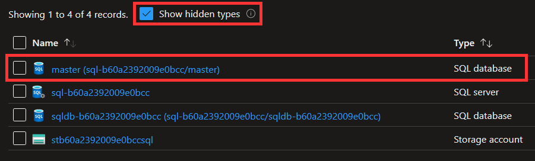

Resources¶
- By default, configure resources based on Microsoft security recommendations, e.g. Security recommendations for Blob storage.
Roles and scope¶
- Use resources that do not require more than
Contributorrole at the resource group scope. If you need to use a higher role, create an example instead.
Hidden resources¶
- Don't create resources that are automatically created by Azure, e.g. hidden resources such as the
masterdatabase for an Azure SQL server:

Modules¶
- A single module call should create a single instance of the main resource created by the module. For example, the
web-appmodule should create a single web app, and thesqlmodule should create a single server. This creates a common expectation for the behavior of our modules. - A module should not create just a single resource. Exceptions can be made if that resource requires complex configuration or a stringent set of predefined parameters.
Submodules¶
If a resource is a child of another resource:
- The parent resource should be configured as a module
- The child resource should be configured as a submodule
For example, the SQL database resource is a child of the SQL server resource (a SQL database cannot exist without a SQL server):
- The SQL server resource should be configured as a module
sql - The SQL database resource should be configured as a submodule
sql//modules/database
Control plane and data plane¶
- A module should only perform control plane operations (e.g., managing Storage account or Key vault), not data plane operations (e.g., managing Storage container or Key vault secret). See control plane and data plane in Microsoft docs.
Performing data plane operations usually require workarounds for dealing with firewalls when run from an automated pipeline that deviate from the deterministic approach promoted by Terraform (e.g, temporarily disabling firewall or temporarily adding own IP to firewall). This may lead to the decision of disabling a resource firewall because it is preventing data plane operations from a pipeline, lowering the security of the resource.
Data plane operations should be handled outside of Terraform.
Note Might be irrelevant depending on the implementation of github/roadmap#614.
Conditional resources¶
Conditional resources refers to the creation of 0 or 1 resources based on a condition.
Use the count meta-argument to conditionally create resources based on a static value, for example a local or variable of type string or bool.
Using a variable of type string string is the more extensible approach, as you can add more allowed values down the road:
variable "kind" {
description = "The kind of Web App to create. Allowed values are \"Linux\" and \"Windows\"."
type = string
default = "Linux"
validation {
condition = contains(["Linux", "Windows"], var.kind)
error_message = "Kind must be \"Linux\" or \"Windows\"."
}
}
resource "azurerm_linux_web_app" "this" {
count = var.kind == "Linux" ? 1 : 0
}
resource "azurerm_windows_web_app" "this" {
count = var.kind == "Windows" ? 1 : 0
}
Repeatable resources¶
Repeatable resources refers to the creation of 0 or more resources based on a value.
For repeatable resources, use a variable of type map(object()) to dynamically create the resources, where setting the value to {} will not create any resources.
variable "firewall_rules" {
description = "A map of SQL firewall rules to create."
type = map(object({
name = string
start_ip_address = string
end_ip_address = string
}))
default = {}
}
resource "azurerm_mssql_firewall_rule" "this" {
for_each = var.firewall_rules
name = each.value.name
start_ip_address = each.value.start_ip_address
end_ip_address = each.value.end_ip_address
}
Repeatable nested blocks¶
Repeatable nested blocks refers to the creation of 0 or more dynamic blocks based on a value.
For repeatable nested blocks, use a variable of type list(object()) to dynamically create the nested blocks, where setting the value to [] will not create any nested blocks:
variable "auth_settings_active_directory" {
description = "A list of authentication settings using the Active Directory provider to configure for this Linux web app."
type = list(object({
client_id = string
client_secret_setting_name = string
}))
default = []
}
resource "azurerm_linux_web_app" "this" {
# omitted
auth_settings {
enabled = length(var.auth_settings_active_directory) == 0 ? false : true
dynamic "active_directory" {
for_each = var.auth_settings_active_directory
content {
client_id = active_directory.value["client_id"]
client_secret_setting_name = active_directory.value["client_secret_setting_name"]
}
}
}
}
Non-repeatable nested blocks¶
Non-repeatable nested blocks refers to the creation of 0 or 1 dynamic blocks based on a value.
For non-repeatable nested blocks, use a variable of type object() to dynamically create the nested block, where setting the value to null will not create the nested block:
variable "blob_properties" {
description = "The blob properties for this storage account."
type = object({
versioning_enabled = optional(bool, true)
change_feed_enabled = optional(bool, true)
})
default = {}
}
resource "azurerm_storage_account" "this" {
# omitted
dynamic "blob_properties" {
for_each = var.blob_properties != null ? [var.blob_properties] : []
content {
versioning_enabled = blob_properties.value["versioning_enabled"]
change_feed_enabled = blob_properties.value["change_feed_enabled"]
}
}
}
Rationale
A nested block may not be supported in certain scenarios. For example, the blob_properties nested block for the azurerm_storage_account resource is only supported if the value of the account_kind argument is set to StorageV2 or BlobStorage.
Exceptions
- Blocks that are defined as required by the provider (e.g. the
site_configblock for theazurerm_linux_web_appresource). - Blocks that are optional but requires an argument to enable/disable its functionality (e.g. the
auth_settingsblock for theazurerm_linux_web_appresource which requires an argumentenabled).